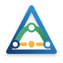
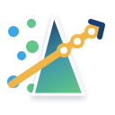

01
CorreLaTE
Convergence
Two independent measurement streams become one validated, correlated result.
Six original icon concepts for CorreLaTE. Each combines ATE blue, Lab green, and a golden correlation result—and is designed to remain recognizable beside the product name.
Two independent measurement streams become one validated, correlated result.
Observations orbit a precise golden fit line, balancing motion and rigor.

A mathematical delta and bridge express correction, limits, and alignment.

Scattered raw values pass through the model and emerge aligned to the fit.
ATE and Lab ribbons interlock in a memorable, continuous relationship.
Correlated observations bloom around a confident golden regression path.